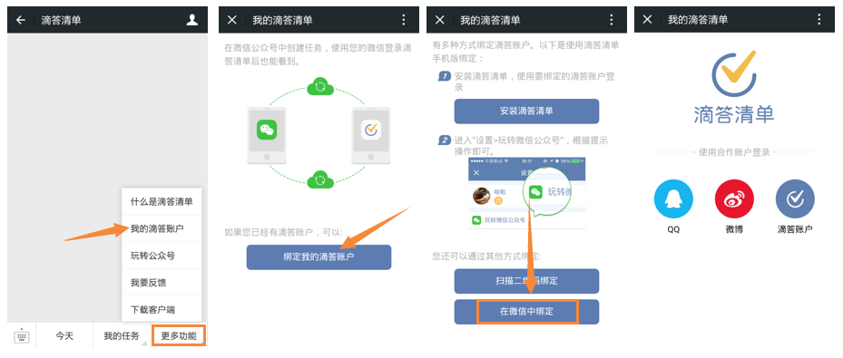
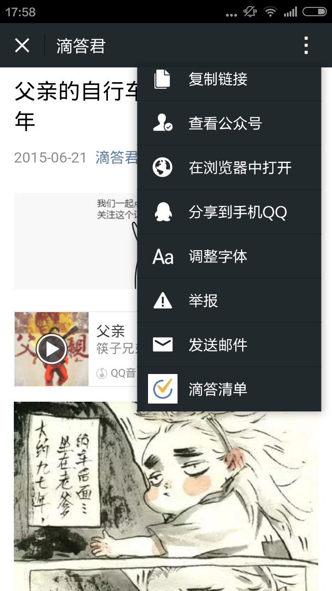

玩转微信公众号
绑定微信公众号
将滴答清单账户与微信公众号（didalist）绑定之后就可以通过微信进行创建任务，查看任务等操作。绑定方式有二种：
- 使用要绑定的滴答账户，登录滴答清单网页版。点击右上角头像，在“设置-账户-玩转微信公众号（红框位置）”中，根据提示使用微信扫描二维码即可。

- 或者打开微信–>添加朋友–>搜索“滴答清单”（didalist）公众号–>关注，
关注成功后，打开公众号–>更多功能–>我的滴答账号–>根据提示选择“在微信中绑定”–>选择登录方式，输入账号即可成功绑定。

如果是通过微信登录滴答清单的用户，可以直接使用微信公众号的功能。
创建任务
成功绑定之后，即可通过向公众号发送信息或者语音的方式在滴答清单中创建任务。
- 语音创建：发送一段语音，智能识别语音内的时间和事件创建相应的任务于收集箱内。
- 文字创建：发送一段文字，一样也是会智能识别并创建任务。
试试发送带有时间信息消息到微信公众号，例如“今天下午三点去开会”“周六9点去打球”等。
- 图片创建：偶尔也会有字懒得打、语音懒得发的情况有木有？拍张照就当做记录有木有？将图片发送给滴答清单，分分钟创建任务。
- 聊天记录：除了自己发送一段文字以外，更方便更酷炫的是可以将和别人的聊天记录发送到滴答清单并创建一段任务。
操作：长按需要保存成任务的聊天记录–>更多–> ••• –>滴答清单
- 网页链接：朋友分享的来不及看的文章或者视频，分分钟保存成任务，提醒自己有时间了再看。
操作：右上角更多—>拉到底部“滴答清单”

查看任务
不仅可以通过微信公众号来创建任务，还可以在微信内查看「今天」「明天」和「所有任务」。